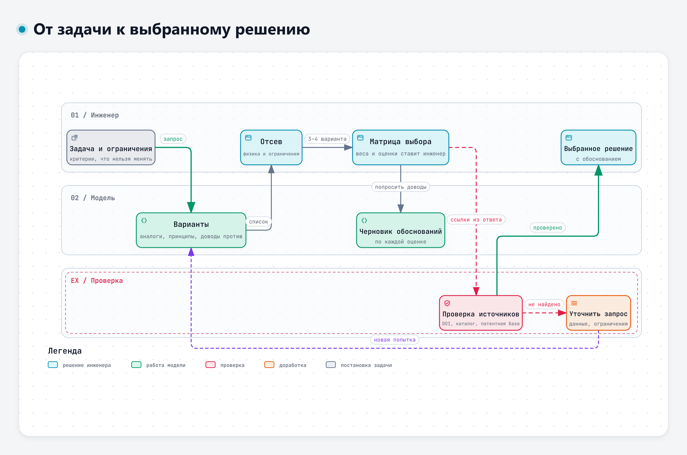
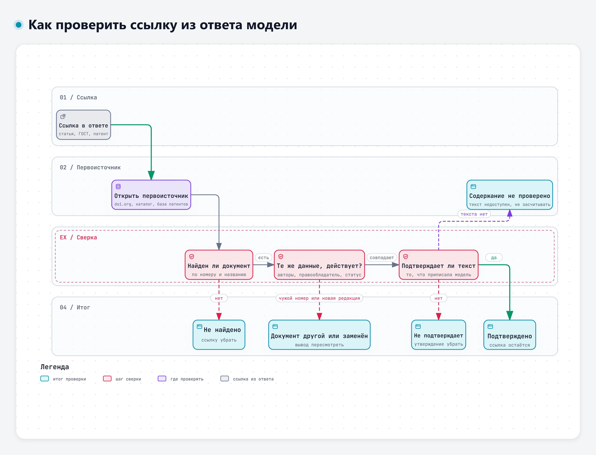

Тема 3.1. Поиск и сравнение технических решений
Языковая модель хорошо придумывает варианты и плохо отвечает за выбор. За минуту она выдаст десять способов решить конструкторскую задачу, среди них будут дельные, банальные и физически невозможные. Ссылки на стандарты и патенты в таком ответе выглядят одинаково убедительно, и настоящие, и выдуманные. Сегодня разберём, как использовать модель для поиска вариантов, сохранив за инженером выбор решения.
Сквозной пример – задача К-1 из дополнения к учебному кейсу: как не допустить глубокого разряда батарей ЭС-24 на стоянке до 14 суток при −25 °C. Она выросла из замечаний З-1 и З-2. Требования ТЗ здесь и дальше в днях 3–5 – по редакции 1 из кейса первого дня.

Интерактивная версия схемы – файл 08-Схемы/d3-put-k-resheniyu.html.
1. Модель как помощник в поиске идей
Что модель умеет хорошо
Конструктор, который ищет решение, обычно перебирает знакомые варианты. Модель видела в обучающих текстах множество решений из разных отраслей и быстро вспоминает то, что инженер мог не держать в голове: аналоги из соседних областей, другие принципы действия, типовые схемы.
Это проверяли экспериментально. В исследовании 2023 года модель решала 12 задач концептуального проектирования, а её решения сравнивали с решениями, собранными у множества людей. Эксперты оценили решения модели как в среднем более осуществимые и полезные, а решения людей – как более новые [1].
«Expert evaluations indicate that the LLM-generated solutions have higher average feasibility and usefulness while the crowdsourced solutions have more novelty.»
Перевод: «Экспертные оценки показывают, что решения языковой модели в среднем более осуществимы и полезны, а решения, собранные у множества людей, отличаются большей новизной.» – Ma и соавт., 2023, препринт arXiv [1]
Это результат одного эксперимента на 12 задачах, и переносить его на любую задачу нельзя. Но направление полезное: в этом эксперименте варианты модели оказались в среднем осуществимее, а самые новые идеи чаще давали люди. Если нужна широта, полезно просить модель о разных принципах действия, а не об «оптимальном решении».
Широту можно увеличить приёмами запроса. В работе 2025 года модели давали несколько профессиональных ролей. Разнообразие идей росло, когда роли задавались в отдельных запросах или по очереди, с доработкой идей от роли к роли [6]. В другом исследовании две разные модели дорабатывали идеи друг друга, повышая новизну и разнообразие исходного набора [5].
«The results of these studies indicate that the collaboration between two LLMs improves the novelty and variety of the initial design concepts generated by an individual LLM.»
Перевод: «Результаты этих исследований показывают, что совместная работа двух языковых моделей повышает новизну и разнообразие исходных концепций, порождённых одной моделью.» – Xiao, Zhang, McAdams, 2026 [5]
Попросите варианты у GigaChat, потом дайте его список Алисе AI с вопросом «что здесь упущено и что не сработает». Или в одном сервисе задайте подряд три роли: «конструктор электрооборудования», «специалист по сервису», «технолог сборки».
Где модель ошибается
В эксперименте, описанном в работе 2025 года, модель целиком вела команду на 48-часовом конкурсе прототипов: придумывала идеи и принимала все конструкторские решения, а люди только выполняли её указания. Команда заняла второе место из шести. Сильнее всего модель проявила себя в генерации идей, но были и характерные сбои [3].
«However, the LLM prematurely abandoned promising concepts when facing minor difficulties, added unnecessary complexity to designs, and experienced design fixation.»
Перевод: «Однако модель преждевременно отказывалась от перспективных концепций при небольших трудностях, излишне усложняла конструкции и зацикливалась на одном решении.» – Ege и соавт., 2025 [3]
Авторы того же исследования советуют оставлять главные решения за человеком, просить модель рассматривать альтернативы и давать ей конкретные задачи на уровне подсистемы [3]. Для нашей задачи это значит: не «как улучшить электрооборудование грузовика», а «как не допустить разряда батарей на стоянке при таких-то ограничениях». А. Субботин в докладе на ИИ-митапе (ноябрь 2026) сформулировал похожее правило для работы с агентами: «Сначала описать работу, потом звать агента. Кривой процесс агент не исправит, а просто сделает быстрее» [46]. При поиске решений модель ускорит работу даже по плохо поставленной задаче, но саму постановку не исправит.
Есть и ошибки, которые на вид не отличить от хороших идей: решение, которое нарушает закон сохранения энергии или прямо противоречит ограничению задачи. В учебном ответе модели по задаче К-1 такие есть, их разберём на практике.
Противоречия в требованиях
Многие конструкторские задачи упираются в противоречие: улучшаешь одно, ухудшается другое. В задаче К-1 их несколько. Чтобы батареи не разряжались, хочется обесточить всё на стоянке, но тахограф и охранная система должны работать всю стоянку. Чтобы был запас заряда, хочется поставить батареи большей ёмкости, но ёмкость не меняется по условию, а масса ограничена двумя килограммами.
Для работы с противоречиями есть теория решения изобретательских задач (ТРИЗ). Её приёмы сильны, но требуют опыта. Исследователи пробуют поручить модели сам ход рассуждения по ТРИЗ: в системе AutoTRIZ модель получает формулировку задачи, проходит шаги метода и выдаёт отчёт с решениями. Систему проверяли на учебных примерах и на задаче о терморегулировании батарейного блока [2]. Авторы прямо называют слабость обычного диалога с моделью при поиске идей.
«However, the lack of transparency and limited control over reasoning steps during ideation often leads to divergent and insufficiently specific results, requiring multiple heuristic attempts by users to achieve desired outcomes.»
Перевод: «Однако из-за непрозрачности и слабого контроля над шагами рассуждения при генерации идей результаты часто получаются разбросанными и недостаточно конкретными, и пользователю приходится делать несколько пробных попыток, чтобы получить нужное.» – Jiang и соавт., 2025 [2]
Работающий приём для чата: сначала попросить модель сформулировать противоречие явно, а уже потом искать варианты. Например: «Сформулируй противоречия в требованиях к задаче К-1 в виде "нужно А, но тогда страдает Б". Для каждого противоречия предложи два-три принципа, как его обойти». Так модель меньше уходит в общие советы.
В системе iDesignGPT модель сначала уточняет постановку задачи, собирает сведения и рассматривает возможные решения, а затем оценивает их. В исследовании 2026 года начинающим конструкторам с такой системой было легче, чем без неё [4]. Мысль та же, что и в теме 1.2: качество ответа задаёт порядок работы.
Приём «доводы против»
Модель охотно хвалит свои идеи. Полезно с самого начала просить обратное: для каждого варианта – доводы против, условия, при которых он не сработает, и места, где модель не уверена. Такой запрос превращает список идей в материал для проверки:
Для задачи К-1 (текст ниже) предложи 6–8 вариантов решения с разными
принципами действия. Для каждого варианта:
- как он работает, одной-двумя фразами;
- какие ограничения задачи он может нарушить;
- два довода против;
- что нужно измерить или посчитать, чтобы убедиться, что он работает.
Отдельным списком перечисли варианты, которые ты считаешь неработоспособными,
и объясни почему. Источники не приводи.
Просить ссылки на этом шаге рано: они пригодятся для двух-трёх отобранных вариантов, и проверять их удобнее отдельно.
2. Сравнение вариантов и матрица выбора
Как устроена матрица
Матрица выбора – таблица, где по строкам критерии, по столбцам варианты. Каждому критерию назначают вес, каждому варианту – оценку по каждому критерию. Взвешенная сумма даёт итог. В задаче К-1 семь критериев: масса, стоимость, технологичность, надёжность, ремонтопригодность, влияние на пуск и совместимость с потребителями стоянки.
У матрицы три уязвимых места.
- Шкала. Нужно заранее договориться, что значит 5 и что значит 1, особенно для массы и стоимости, где «больше» – хуже. В задаче К-1 у всех критериев 5 означает «лучше».
- Веса. Их сумма должна быть равна 1, а распределение отражает приоритеты задачи. Веса определяет инженер или команда, а не модель.
- Обоснование оценок. Оценка без обоснования – мнение. Каждая оценка должна опираться на расчёт, измерение, опыт или хотя бы явное допущение.
Перед матрицей стоит сделать отсев. Вариант, который нарушает жёсткое ограничение или физику, в матрицу не попадает, сколько бы баллов он ни набрал по остальным критериям. Матрица сравнивает допустимые варианты, а не все подряд.
Удобно формулировать критерии так, чтобы их можно было проверить. В вебинаре П. Гагарина о разработке с агентами есть формула для постановки задач: «Критерий успеха = сценарий + результат», а «"Код написан" - не критерий» [42]. Для инженерной задачи это значит: не «надёжность пуска», а «после 14 суток стоянки при −25 °C двигатель запускается штатным стартером с первой попытки». Такой критерий можно проверить испытанием.
Что делает модель, а что инженер
Модель полезна в начале и в конце этой работы. В начале она помогает собрать и структурировать критерии и не забыть очевидное. В конце пишет черновики обоснований для оценок, которые поставил инженер. Исследования подтверждают именно такое разделение.
В работе 2026 года модель извлекала критерии и их веса для метода анализа иерархий из записанных обсуждений инженерной команды. Веса основных критериев оказались близки к полученным вручную, но согласованность оценок менялась. Авторы делают вывод, что результат модели должен дополнять суждение эксперта, а не заменять его [7].
В другом эксперименте два чат-сервиса, ChatGPT и DeepSeek, сопровождали все этапы многокритериального выбора по методу DEX. С описанием критериев и сбором данных о вариантах они справлялись хорошо, а вот методические шаги выполняли нестабильно [8].
«However, at the current stage of development, the support for the whole multi-criteria decision-making process is still lacking, mainly due to occasionally inconsistent and erroneous execution of methodological steps.»
Перевод: «Однако на нынешнем этапе развития поддержки всего процесса многокритериального выбора всё ещё недостаточно, главным образом из-за того, что методические шаги время от времени выполняются непоследовательно и с ошибками.» – Bohanec, Rajkovič, Rajkovič, 2025 [8]
Авторы предлагают гибридную схему: модель готовит основу, специализированная программа ведёт расчёт [8]. Похоже рассуждает автор разбора 2026 года: пересказать документы и сделать выбор – разные задачи [9].
«However, summarisation and decision making are different tasks: summarisation is primarily epistemic compression, whereas choice is normative aggregation.»
Перевод: «Однако пересказ и принятие решения – разные задачи: пересказ – это прежде всего сжатие знания, а выбор – нормативное агрегирование.» – Danielson, 2026 [9]
Проще говоря, при выборе нужно объединить оценки с учётом предпочтений и весов критериев, и простого пересказа документов для этого недостаточно.
Систематический обзор 2026 года по 63 публикациям о моделях в многокритериальном выборе отмечает, что такая связка автоматизирует работу и помогает с неструктурированными данными, но остаётся склонной к смещениям, плохо объяснимой и чувствительной к формулировке запроса [11]. В исследовании выбора материалов рекомендации моделей заметно расходились с выбором экспертов [10].
Для занятия правило такое: веса и оценки ставите вы, а модель проверяет таблицу на противоречия, пишет обоснования и задаёт неудобные вопросы.
Почему оценкам модели нельзя доверять напрямую
Если попросить модель саму оценить варианты, на результат влияет то, что к качеству решения отношения не имеет. Исследователи, изучавшие модели в роли судьи, описали несколько таких смещений [12].
«Position bias is when an LLM exhibits a propensity to favor certain positions over others.»
Перевод: «Смещение по позиции – это склонность модели отдавать предпочтение одним позициям перед другими.» – Zheng и соавт., 2023 [12]
В той же работе описано смещение в пользу более длинных ответов: модель-судья предпочитает многословный вариант, даже если он не лучше короткого [12]. Систематическое исследование 2025 года подтвердило, что смещение по позиции не случайно и зависит от модели и задачи [13]. Для матрицы выбора это значит, что вариант, описанный первым и подробнее остальных, может получить лишние баллы. Проверка простая: переставьте варианты местами, сократите описания до одинаковой длины и спросите ещё раз в новом чате. Если итог поменялся, оценки модели не годятся даже как черновик.
Матрица – не автомат
Матрица помогает думать, но не решает за вас. Если два варианта отличаются на 0,1 балла при оценках по пятибалльной шкале, это в пределах точности самих оценок. В таких случаях полезно:
- проверить устойчивость – поменять веса в разумных пределах и посмотреть, сменится ли лидер;
- вернуться к ограничениям – посчитать, выполняет ли лидер требование с запасом (в задаче К-1 есть энергобаланс в таблице Д-2);
- записать обоснование выбора словами – почему выбран именно этот вариант и что придётся проверить испытанием.
Как это выглядит на числах. Возьмём условный пример с тремя критериями: влияние на пуск (вес 0,5), стоимость (0,3), масса (0,2). Вариант А получил оценки 4, 4 и 5, вариант Б – 5, 2 и 4. Итог – сумма произведений «вес × оценка»:
- А: 0,5 × 4 + 0,3 × 4 + 0,2 × 5 = 2,0 + 1,2 + 1,0 = 4,2;
- Б: 0,5 × 5 + 0,3 × 2 + 0,2 × 4 = 2,5 + 0,6 + 0,8 = 3,9.
Лидирует А. Теперь проверим устойчивость: перенесём 0,1 веса со стоимости на влияние на пуск (0,6; 0,2; 0,2). Получится А – 4,2, Б – 4,2, ничья. Перенесём ещё 0,1 (0,7; 0,1; 0,2) – и впереди Б: 4,5 против 4,2. Выбор зависит от того, насколько пуск важнее стоимости. Значит, решать надо не арифметикой, а расчётом или испытанием по влиянию на пуск.
В докладе В. Малаканова на отраслевом ИИ-митапе (ноябрь 2026) матрица выбора сравнивала способы обработки вопросов пользователей. Рядом с таблицей стояла оговорка, что реальная стоимость и эффект зависят от проекта, а цифры производителя были прямо помечены как его собственные данные [44]. Так и нужно подавать результат: что измерено, что оценено, на чьих данных.
3. Проверка источников
Модель может выдумать стандарт, патент или статью
Так устроена сама технология. Модель составляет правдоподобный текст, и библиографическая ссылка для неё – такой же текст: фамилия, название, год, номер. В исследовании 2026 года четыре модели работали без доступа к источникам и сгенерировали больше 17 тысяч ссылок на научные работы. Ни у одной модели доля ссылок, существование которых подтвердила автоматическая проверка, не превысила 47,5 %, при этом оформление оставалось безупречным [14]. Ещё 36–61 % ссылок проверка не смогла ни подтвердить, ни опровергнуть [14]. Это результат одного эксперимента с четырьмя моделями, а не норма для любого сервиса.
«Across 17,443 generated citations, no model exceeds a citation-level existence rate of 0.475; Temporal and Combo conditions produce the steepest drops while outputs remain format-compliant (well-formed bibliographic fields).»
Перевод: «Из 17 443 сгенерированных ссылок ни у одной модели доля существующих работ не превышает 0,475. Сильнее всего она падает при ограничении по годам и при сочетании ограничений, а оформление ссылок при этом остаётся правильным (поля библиографического описания заполнены как положено).» – Zhao, Tang, Qian, 2026, препринт arXiv [14]
В отдельной проверке 2023 года из 35 ссылок, которые выдал чат-сервис, настоящими оказались две, остальные были похожи на реальные работы или собраны из нескольких реальных [16]. Выдуманные ссылки уже проникают в научные публикации: аудит 111 миллионов ссылок в 2,5 миллиона работ дал консервативную оценку почти в 147 тысяч несуществующих ссылок только за 2025 год [15].
С патентами то же самое. Модели неплохо пересказывают текст патента, который им дали, но с выводами о замысле изобретения справляются хуже, и авторы исследования 2026 года подчёркивают необходимость контроля человеком [19]. Систематический обзор 129 работ о моделях в патентной сфере приходит к тому же выводу [20].
«[…] LLMs are best positioned as assistive tools requiring human oversight rather than autonomous replacements […]»
Перевод: «[…] языковым моделям лучше всего подходит роль вспомогательных инструментов под контролем человека, а не автономной замены […]» – Jiang и соавт., 2026 [20]
Выдуманные пакеты: когда ошибка становится атакой
Самый наглядный пример цены выдуманной ссылки – из программирования. Модель, которая пишет программу, может сослаться на библиотеку, которой не существует. В исследовании 2024 года на 576 тысячах фрагментов кода доля таких ссылок составила не меньше 5,2 % у коммерческих моделей и 21,7 % у открытых [17]. Злоумышленник может зарегистрировать библиотеку с выдуманным именем и положить в неё вредоносный код. Этот сценарий разбирал А. Морозов в докладе на ИИ-митапе (ноябрь 2026) [48].
Исследователи 2026 года проверили сценарий на практике: зарегистрировали 107 выдуманных моделями пакетов в открытом реестре и полгода наблюдали. Около трети установок сделали разработчики. Поиск в интернете не помог [18].
«In our evaluated setting, tool-augmented generation, specifically using web search, fails to mitigate this threat.»
Перевод: «В рассмотренных условиях генерация с использованием инструментов, а именно поиска в интернете, эту угрозу не устраняет.» – Huang и соавт., 2026 [18]
Больше того, в этой работе поиск даже повысил долю повторяющихся выдуманных названий с 11,2 до 17,3 % [18]. Для инженера вывод общий: режим поиска в интернете снижает риск устаревших сведений, но не гарантирует, что ссылка настоящая и что найденная страница говорит то, что ей приписано.
Как проверять ссылку
Ссылка в ответе модели – это гипотеза, пока вы не открыли документ. Проверка занимает несколько минут.

Интерактивная версия схемы – файл 08-Схемы/d3-proverka-istochnika.html.
| Что в ответе | Где проверять | Что сверить |
|---|---|---|
| Научная статья с DOI | Открыть адрес вида https://doi.org/… | Ведёт ли DOI на эту статью: название, авторы, год, журнал |
| Статья без DOI | Поиск по точному названию в научных базах | Есть ли статья с таким названием и такими авторами |
| ГОСТ, ГОСТ Р | Каталоги стандартов, официальный сайт Росстандарта | Обозначение, название, статус: действует или заменён, чем заменён |
| Патент | Реестры ФИПС, Google Patents | Номер, название, правообладатель, класс МПК |
| Цифра «по данным работы» | Сам текст работы | Есть ли такая цифра и в каком контексте |
Проверка идёт по шагам. Существует ли документ? Совпадают ли его данные с тем, что написала модель: название, авторы или правообладатель, год? Действует ли он или заменён? Подтверждает ли его текст то, что модель ему приписала? Отсюда возможные итоги:
- подтверждено – документ найден, данные совпадают, текст подтверждает утверждение;
- не найдено – документа нет ни по номеру, ни по названию;
- документ другой – номер существует, но принадлежит другому документу;
- заменён – документ был, но действует новая редакция, и вывод надо сверить по ней;
- не подтверждает – документ настоящий, но приписанного утверждения в нём нет;
- содержание не проверено – документ найден, но полный текст недоступен. Так и пишите, ссылку подтверждённой не считайте.
Самые коварные – «документ другой» и «не подтверждает»: номер «проходит проверку», если смотреть только на то, существует ли он.
Поэтому мало убедиться, что номер стандарта или патента есть в реестре. Надо прочитать название, правообладателя или область применения и сравнить с тем, что приписала модель. В учебном ответе модели из дополнения к кейсу есть ссылки с разными итогами, их разбор – на практике.
Отдельный случай – стандарты, которые модель называет действующими. Модель училась на текстах прошлых лет и может не знать о новой редакции. Например, ГОСТ Р 51901.12-2007 о методе анализа видов и последствий отказов с 1 января 2022 года заменён ГОСТ Р 27.303-2021 [36], [37]. Если ответ модели опирается на заменённый стандарт, вывод придётся проверить по действующему.
Информированный скептицизм
Для такого отношения к ответам модели есть название – «информированный скептицизм» (Informed Skepticism). Так его назвали авторы концептуальной работы 2026 года о проверке кода, написанного моделями [22]. Они считают, что привычного «доверяй, но проверяй» уже мало.
«Because these AI mistakes are so good at faking, the old "trust, but verify" approach is no longer enough.»
Перевод: «Ошибки ИИ так хорошо маскируются, что прежнего подхода "доверяй, но проверяй" уже недостаточно.» – Faker, Toker, 2026 [22]
Подход держится на трёх опорах: понимать, как ошибаются модели; оценивать риск по тому, где будет использован результат; выбирать способ проверки под этот риск [22]. Работа написана о программном коде, но переносится на конструкторскую работу почти дословно. Ссылка в пояснительной записке к выбору решения требует другой проверки, чем ссылка в рабочей переписке.
Почему это нужно проговаривать отдельно? В эксперименте 2024 года людям давали советы и сообщали, что совет подготовил ИИ. Одно это знание заставляло людей следовать совету, даже когда он противоречил имеющимся сведениям и их собственной оценке [21]. Модель пишет уверенно и гладко, и инженер, который устал или торопится, рискует принять это за проверенный результат.
4. Что из этого следует для работы
| Шаг | Что делает модель | Что решает инженер |
|---|---|---|
| Постановка | Помогает сформулировать противоречия и вопросы к задаче | Задаёт ограничения и критерии успеха |
| Варианты | Предлагает варианты с разными принципами действия и доводы против | Отсеивает то, что нарушает физику и ограничения |
| Матрица | Проверяет таблицу на противоречия, пишет черновики обоснований | Назначает веса и ставит оценки |
| Источники | Подсказывает, где искать | Открывает каждый документ и сверяет содержание |
| Решение | Готовит черновик пояснительной записки | Выбирает и отвечает за выбор |
К. Овчинников в докладе на ИИ-митапе (ноябрь 2026) говорил о парадоксе надзора: проверить работу ИИ может только тот, кто умеет делать её сам [47]. Для выбора технических решений это особенно заметно. Чтобы увидеть, укладывается ли вариант в энергобаланс стоянки, нужно самому посчитать ампер-часы за 336 ч. Модель может предложить вариант, который на этом простом расчёте не выдерживает проверки, и не заметить этого.
Что запомнить
- Модель хороша для широты поиска: аналоги, принципы действия, доводы против. В эксперименте 2023 года самые новые идеи чаще давали люди.
- Сначала отсев по физике и ограничениям, потом матрица. Недопустимый вариант не спасают баллы.
- Веса и оценки ставит инженер. Сумма весов равна 1, у каждой оценки есть обоснование. Небольшой сдвиг весов может сменить лидера – проверяйте.
- Оценки модели зависят от порядка и длины описаний. Переставьте варианты и спросите ещё раз.
- Каждая ссылка – гипотеза, пока документ не открыт. Номер может существовать и принадлежать другому документу.
- Режим поиска не гарантирует настоящих ссылок.
Источники
Нумерация общая для всех материалов третьего дня. Полный список – в файле «Источники» в папке дня.
Научные публикации
- [1] Ma K., Grandi D., McComb C., Goucher-Lambert K. Conceptual Design Generation Using Large Language Models. 2023. Препринт arXiv. https://doi.org/10.48550/arXiv.2306.01779
- [2] Jiang S., Li W., Qian Y., et al. AutoTRIZ: Automating engineering innovation with TRIZ and large language models // Advanced Engineering Informatics. 2025. https://doi.org/10.1016/j.aei.2025.103312
- [3] Ege D. N., Øvrebø H. H., Stubberud V., et al. ChatGPT as an inventor: eliciting the strengths and weaknesses of current large language models against humans in engineering design // Artificial Intelligence for Engineering Design, Analysis and Manufacturing. 2025. https://doi.org/10.1017/s0890060425000010
- [4] Liu S., Shen Y., Zhang Y., et al. iDesignGPT enhances conceptual design via large language model agentic workflows // Nature Communications. 2026. https://doi.org/10.1038/s41467-026-68672-1
- [5] Xiao S., Zhang G., McAdams D. A. Collaboration Between Two Large Language Models for Design Concept Generation // Journal of Mechanical Design. 2026. https://doi.org/10.1115/1.4072235
- [6] Feng W. B., Hélie S., Panchal J. H. Enhancing design concept diversity: multi-persona prompting strategies for large language models // Design Science. 2025. https://doi.org/10.1017/dsj.2025.10037
- [7] Piñones E., Nikulin C., Briede Westermeyer J. C. SUPPORTING DECISION MAKING IN ENGINEERING DESIGN BY ANALIZING TEAM DISCUSSIONS WITH LANGUAGE MODELS // DYNA. 2026. https://doi.org/10.52152/d11565
- [8] Bohanec M., Rajkovič U., Rajkovič V. An Experimental Evaluation of Large Language Models in Supporting the DEX Multi-Criteria Decision-Making Process // Informatica. 2025. https://doi.org/10.31449/inf.v49i4.12884
- [9] Danielson M. Using LLMs for Multi-Criteria Decision Analysis: The Swedish Nord-Syd Case // Electronics. 2026. https://doi.org/10.3390/electronics15194519
- [10] Grandi D., Jain Y. P., Groom A., et al. Evaluating Large Language Models for Material Selection. 2024. Препринт arXiv. https://doi.org/10.48550/arXiv.2405.03695
- [11] Sahoo S. K., Choudhury B. B., Dhal P. R., et al. Large Language Models in Multi Criteria Decision Making: A Systematic Review, Taxonomy, and Future Research Agenda // Applied Research Advances. 2026. https://doi.org/10.65069/ara21202614
- [12] Zheng L., Chiang W.-L., Sheng Y., et al. Judging LLM-as-a-Judge with MT-Bench and Chatbot Arena // Advances in Neural Information Processing Systems 36. 2023. https://doi.org/10.52202/075280-2020
- [13] Shi L., Ma C., Liang W., et al. Judging the Judges: A Systematic Study of Position Bias in LLM-as-a-Judge // Proceedings of IJCNLP-AACL 2025. https://doi.org/10.18653/v1/2025.ijcnlp-long.18
- [14] Zhao C., Tang Y., Qian Y. Do Deployment Constraints Make LLMs Hallucinate Citations? An Empirical Study across Four Models and Five Prompting Regimes. 2026. Препринт arXiv. https://doi.org/10.48550/arXiv.2603.07287
- [15] Zhao Z., Wang Y., Stuart T., et al. LLM hallucinations in the wild: Large-scale evidence from non-existent citations. 2026. Препринт arXiv. https://doi.org/10.48550/arXiv.2605.07723
- [16] McGowan A., Gui Y., Dobbs M., et al. ChatGPT and Bard exhibit spontaneous citation fabrication during psychiatry literature search // Psychiatry Research. 2023. https://doi.org/10.1016/j.psychres.2023.115334
- [17] Spracklen J., Wijewickrama R., Sakib A. H. M. N., et al. We Have a Package for You! A Comprehensive Analysis of Package Hallucinations by Code Generating LLMs. 2024. Препринт arXiv. https://doi.org/10.48550/arXiv.2406.10279
- [18] Huang Z., Liu C., Wang Z., et al. Package Hallucinations as Phantoms in Open Source Software Supply Chains: An Empirical Security Analysis // ACM Transactions on Software Engineering and Methodology. 2026. https://doi.org/10.1145/3830237
- [19] Jiang P., Wang Y., Han J. Can large language models understand engineering design patents? An exploratory study // Proceedings of the Design Society. 2026. https://doi.org/10.1017/pds.2026.10593
- [20] Jiang P., Arena A. P., Sorce S., Atherton M. Large language models in the patent lifecycle: A systematic review // World Patent Information. 2026. https://doi.org/10.1016/j.wpi.2026.102506
- [21] Klingbeil A., Grützner C., Schreck P. Trust and reliance on AI – An experimental study on the extent and costs of overreliance on AI // Computers in Human Behavior. 2024. https://doi.org/10.1016/j.chb.2024.108352
- [22] Faker O., Toker S. Informed Skepticism: Navigating The Code Hallucination Dilemma // 2026 5th International Informatics and Software Engineering Conference (IISEC). 2026. https://doi.org/10.1109/iisec69317.2026.11418436
Нормативные и официальные документы
- [36] ГОСТ Р 27.303-2021 (МЭК 60812:2018). Надежность в технике. Анализ видов и последствий отказов. Карточка в каталоге стандартов: https://meganorm.ru/Index/75/75897.htm ; текст приказа Росстандарта от 21.09.2021 № 987-ст: https://pravo.ppt.ru/prikaz/rosstandart/n-987-st-261679 (вторичные источники)
- [37] ГОСТ Р 51901.12-2007 (МЭК 60812:2006). Менеджмент риска. Метод анализа видов и последствий отказов. Карточка в каталоге стандартов: https://meganorm.ru/Index/44/44254.htm (вторичный источник)
Выступления и вебинары
- [42] Гагарин П. Разработка с агентами: от постановки задачи до деплоя. Вебинар 2 по ИИ, УЦ «МАСКОМ» и PVS-Studio, 28.07.2026 (презентация доклада).
- [44] Малаканов В. Код, Jev, LLM, WebMCP. Доклад на ИИ-митапе ЦГУ, 06.11.2026 (презентация доклада).
- [46] Субботин А. Платформы для совместной работы с ИИ-агентами. Доклад на ИИ-митапе ЦГУ, 06.11.2026 (презентация доклада).
- [47] Овчинников К. Инженер после AI. Доклад на ИИ-митапе ЦГУ, 06.11.2026 (презентация доклада).
- [48] Морозов А. AI в безопасности и безопасность в AI. Доклад на ИИ-митапе ЦГУ, 06.11.2026 (презентация доклада).
Учебные материалы
Учебный кейс ЭС-24 и его дополнение к третьему дню составлены для курса. Узел условный, значения подобраны для упражнений.
Автор курса
Виталий Пиков
- Архитектор информационной безопасности • РБПО • DevSecOps • AppSec
- Лектор и автор образовательных программ по ИБ и РБПО
Телефон: +7 (963) 782-92-78 · E-mail: vitaly@pikov.expert · Сайт: https://pikov.expert · Telegram: @UnderLineSecurity